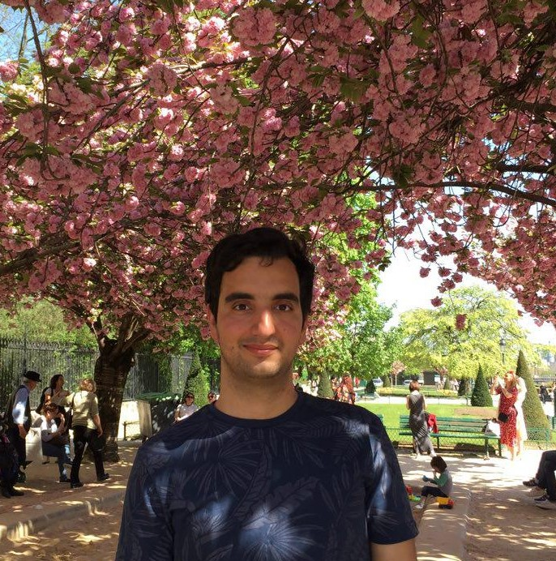

|  | Postdoctoral Scholar Contact Address: E-mail: soroosh.shafiee@gmail.com |
August 2021: I join CMU as a postdoctoral scholar working with Professor Fatma Kılınç-Karzan.
October 2020: I join ETH Zurich as a postdoctoral scholar working with Professor John Lygeros and Professor Florian Dörfler.
June 2020: I defend my PhD Thesis entitled Wasserstein Distributionally Robust Learning at EPFL.
May 2020: I receive the Swiss National Science Foundation Early PostDoc Mobility Fellowship. The fellowship covers a postdoctoral position for 18 months.
Soroosh Shafieezadeh Abadeh is currently a postdoctoral researcher at Tepper School of Business at Carnegie Mellon University, working with Professor Fatma Kılınç-Karzan. Before joining CMU, he held a postdoctoral position at the Automatic Control Laboratory at ETH Zurich, working with John Lygeros and Florian Dörfler. He received his doctoral degree in Management of Technology from École Polytechnique Fédérale de Lausanne in 2020, where he worked with Professor Daniel Kuhn and Professor Peyman Mohajerin Esfahani. His doctoral dissertation entitled Wasserstein Distributionally Robust Learning was awarded an EPFL Thesis Distinction in 2020. He received a Bachelor and a Master degree in Electrical Engineering (major in Automatic Control) from the University of Tehran in 2011 and 2014, respectively.
His current research interests are focused on optimization under uncertainty, the design of large-scale algorithms for solving stochastic and distributionally robust optimization problems, and the development of statistical tools for data-driven decision-making problems. His research is inspired by applications in machine learning, control, economics and finance.
Swiss National Science Foundation Early PostDoc Mobility Fellowship, 2020
Bridging Bayesian and Minimax Mean Square Error Estimation via Wasserstein Distributionally Robust Optimization
with V. A. Nguyen, D. Kuhn, P. Mohajerin Esfahani
Mathematics of Operations Research, 2021
Wasserstein Distributionally Robust Optimization: Theory and Applications in Machine Learning
with D. Kuhn, P. Mohajerin Esfahani, and V. A. Nguyen
INFORMS TutORials in Operations Research
Regularization via Mass Transportation
with D. Kuhn, and P. Mohajerin Esfahani
Journal of Machine Learning Research, 2019
Data-driven Inverse Optimization with Imperfect Information
with P. Mohajerin Esfahani, G. A. Hanasusanto, D. Kuhn
Mathematical Programming, 2018
Evolving Takagi-Sugeno Model Based on Online Gustafson-Kessel Algorithm and Kernel Recursive Least Square Method
with A. Kalhor
Evolving Systems, 2016
Piecewise Linear Spine for Speed-Energy Efficiency Trade-off in Quadruped Robots
with M. Khoramshahi, H. Jalaly Bidgoly, A. Asaei, A. J. Ijspeert, M. Nili Ahmadabad
Robotics and Autonomous Systems, 2013
Calculating Optimistic Likelihoods Using (Geodesically) Convex Optimization
with V. A. Nguyen, M.-C. Yue, D. Kuhn, W. Wiesemann
Advances in Neural Information Processing Systems (NeurIPS), Vancouver, 2019
Optimistic Distributionally Robust Optimization for Nonparametric Likelihood Approximation
with V. A. Nguyen, M.-C. Yue, D. Kuhn, W. Wiesemann
Advances in Neural Information Processing Systems (NeurIPS), Vancouver, 2019
Wasserstein Distributionally Robust Kalman Filtering
with V. A. Nguyen, D. Kuhn, P. Mohajerin Esfahani
(spotlight) Advances in Neural Information Processing Systems (NeurIPS), Montreal, 2018
Distributionally Robust Logistic Regression
with P. Mohajerin Esfahani, D. Kuhn
(spotlight) Advances in Neural Information Processing Systems (NeurIPS), Montreal, 2015
A Robust Optimization Approach to Network Control Using Local Information Exchange
with G. Darivianakis, A. Georghiou, J. Lygeros
Under Revision
Semi-Discrete Optimal Transport: Hardness, Regularization and Numerical Solution
with B. Taşkesen and D. Kuhn
Under Review
Hardness of Discrete Optimal Transport
with B. Taşkesen and D. Kuhn and K. Natarajan
Under Review
Optimal Transport Based Distributionally Robust Optimization: Nash Equilibrium, Regularization, and Computation
L. Aolaritei, D. Kuhn, J. Lygeros, F. Dörfler
Working Paper
High Dimensional Analysis of Wasserstein Distributionally Learning
with L. Aolaritei and F. Dörfler
Working Paper.
Statistics of the Extremes of Random Walks: A Copula-Free Approach
with C. Koçyiğit and N. Rujeerapaiboon
Working Paper
Reviewer for Journals: Mathematical Programming, Operations Research, Management Science, Mathematics of Operations Research, SIAM Journal on Optimization, Journal of Machine Learning Research, SIAM Journal on Mathematics of Data Science, Machine Learning, IEEE Transactions on Pattern Analysis and Machine Intelligence, IEEE Transactions on Automatic Control, Operations Research Letters, INFORMS Journal on Optimization, European Journal of Operational Research.
Reviewer for Conferences: ICML (2019, 2021), NeurIPS (2019, 2020, 2021), AAAI (2020).